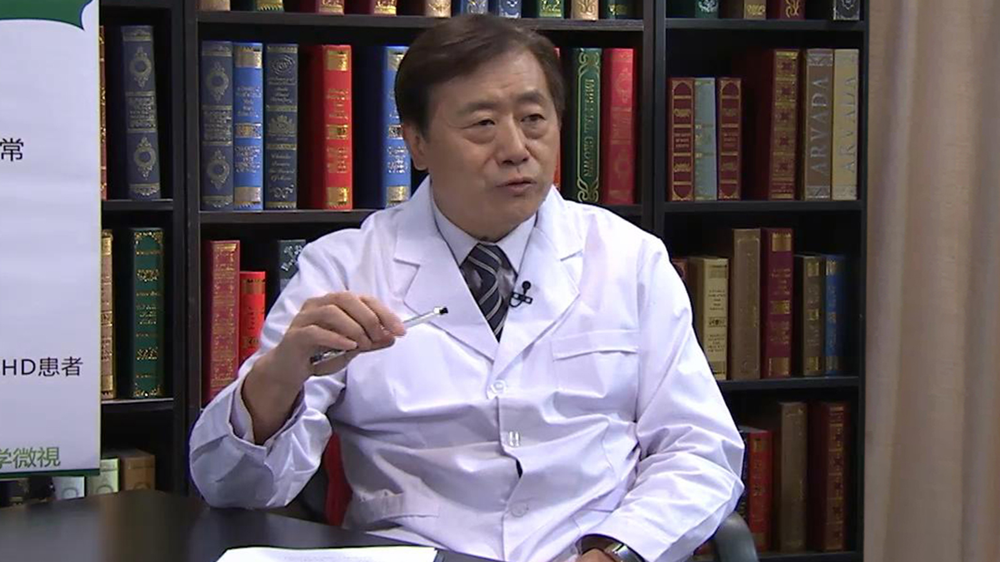

2.18 儿童常见心理问题¶
郑毅 主任医师¶

首都医科大学附属北京安定医院副院长 主任医师 博士生导师 ；
国际儿童青少年精神医学及相关学科协会副主席；中国儿童心理卫生专业委员会副主任；中华医学会精神科分会委员 儿童学组副主任委员；中国医师协会精神科分会委员；中国神经科学会精神科基础与临床分会委员；中华精神科杂志副总编
主要成就： 负责和参与多项国家级科学研究；国内外期刊发表专业学术论文150余篇；主编或参编著作40余部，包括4部国家级行业指南和技术规范。
专业特长： 擅长儿童精神疾病的诊疗防治、独生子女健全人格的培养、脑潜能开发、学习困难、儿童青少年行为相关障碍、儿童精神障碍遗传及行为基因学有特殊研究儿童精神疾病的诊疗防治、独生子女健全人格的培养、脑潜能开发、学习困难、儿童青少年行为相关障碍、儿童精神障碍遗传及行为基因学有特殊研究。
儿童心理疾病发病率是成人的近2倍！常见儿童心理疾病有哪些？¶
我们以前一直关注身体的健康，实际上人的真正的健康是身体没有疾病，但是心理还要健康，社会适应还要良好，同时还有很好的道德规范，这样的人才是一个成功的和健康的人。
所以说儿童心理健康就涉及到一个人的幸福之源，成功之本。可能身体没病，但是可能永远不幸福，因为心理不健康，可能永远不能成功，因为没有很好的心理的适应和调节能力。所以我觉得儿童的心理健康是非常关键的，而且也涉及到了整个人的健康应该从儿童的健康抓起，儿童的健康要从儿童心理健康抓起，所以这样是一个非常关键的话题了。
其实心理障碍的发生率非常普遍，很多的人吃喝拉撒睡当中都有心理问题。心理问题在国际患病的比例，大概世界卫生组织的估计，我在日内瓦开会，当时有一个指南，估计大概儿童20%是有心理障碍的，比成人多的，成人中大概10%有心理障碍，儿童高于成人一倍，不要看儿童简单，儿童生长发育过程中，心理发育的问题，到情绪问题，学习问题，非常多，而且占的比例也很大。
所以谈到儿童的心理疾病就要知道，凡是导致儿童的情绪、行为和认知能力，适应社会的能力，跟正常标准不一样的一些行为、情绪和学习能力，这个时候说明心理上可能是有问题的。
概括起来讲，儿童的心理疾病可能在情绪方面有一大类，比如儿童的焦虑，儿童的抑郁，儿童的躁狂，情绪的不稳定。还有儿童的行为有一大类，注意缺陷，多动症，还有抽动，挤眉弄眼这些怪的毛病，也是行为上面的一些问题，运动方面的一些问题。还有一些冲动怪异的行为，还有一些交往困难的行为，比如像孤独症。还有一大类跟认知和学习有关的一些问题，常见的就是学习困难，阅读障碍。还有一些特殊的学习困难，还有一些广泛的发育障碍，这些都是跟智力有关的一些问题，比如精神发育迟滞。
我们现在非常重要的一个发展趋势，美国2013年最新的诊断标准，把儿童的病和成人的病界限打破了，就是儿童病和成人病没有明显的界限，换句话讲，儿童病也可以发展到成年，也可以在成年中出现，成年的病也大部分源于儿童。所以这样一个全生命周期的健康观念目前是社会非常推崇和流行的，所以也提示了我们儿童心理健康的关键期的重要性。
所以儿童疾病换句话简单的说，吃喝拉撒睡后边都有儿童心理障碍的问题。比如进食障碍、厌食、贪食也是问题，还有这些行为的问题，网络使用过度，网络游戏成瘾，也是问题，甚至包括物质滥用，这些都是儿童的心理问题。所以我觉得对儿童心理问题，就像认识躯体疾病一样，有发生发展的规律，所以儿童的心理问题也可以早期识别、早期发现，这样才能够很早的去就医。
有一个很简单的现象，我工作30多年，很多儿童的心理障碍和心理疾病，包括成人的心理疾病，治疗起来并不困难。困难在哪？是老百姓不知道要去治，不知道这是病。目前对疾病的识别和认识是最重要的关键。其实我们很多心理疾病治疗的效果，包括抑郁症，比高血压、糖尿病都好。但是高血压、糖尿病非常重视，一直吃药，一直去看医生，而心理障碍不知道这是病，也不知道去看医生，最后导致了严重的后果，甚至自杀，甚至出现严重的攻击行为，所以我觉得这是我们问题的关键。
什么是儿童学校恐惧症？恐惧的背后隐藏着哪些原因？¶
（采访）一说儿童首先想的主要任务就是去上学，前几天看新闻，一个小女孩她一到学校就伴随头痛，偶尔还有发烧，结果家长带她去做检查，发现她患有拒绝上学症，难道真的有这种疾病吗？
学术术语叫学校恐惧症，社交恐惧症跟学校恐惧症有密切关系的。学校恐惧实际上跟人的情绪有关，一种焦虑有关的一种心理障碍，算焦虑的一种，这是人非常普遍的一个情绪。但是由于初期可能没有很好地重视，可能没有给一个很好的环境。
比如学习本来是非常快乐的事，小孩都爱学习东西，很多孩子在刚上学时候特别高兴，但是我们人为的把学习和痛苦从小很早就给结合起来了，所以小孩子刚会认字，刚会说话，就不停的逼着学这个背这个，所以小孩生下来就觉得学习是很痛苦的，逐渐开始对学习产生了恐惧。父母对学习成绩又给予高度的重视，可能他的学习成绩好与坏只是暂时的。父母非常严格，为什么差两分，从小就对学习产生了恐惧。一旦某个考试没考好，一旦某一个作业没做完，他就不敢去上学了，一看不敢上学了，结果父母反而害怕了，赶紧又哄他，他觉得不去上学反而能得到好处，这样这种行为就固定下来了，所以慢慢形成了很严重的恐惧。
（采访）跟家长是有关系的。
跟教育模式，跟学习的这些压力，跟家长的这种关注，跟从小心理健康的模式的培养，有密切的关系。
（采访）其实中国式父母都是望子成龙，望子成凤，希望自己的孩子在学习上取得不错的成绩，还有攀比的心理，其实都会给孩子造成心理的压力。
如果一个孩子智力水平正常，发育的机会都均等，都有成功的希望，并不是说某些超智、天才才能成功，我们判断成功很多的标准，智力要求是正常的，并不是智力超常，智力正常就有成功的机会，但是成不成功看心理健康。所以过分地把学习看重了，把心理、适应能力忽视了，这样的孩子虽然在学习方面可能记了很多知识，表面看似好像背了唐诗几百首，但是实际上能力很差，到时候在学习上遇见很多困难，而且认为学习是不能出错的，一出错就慌了，就不行了，就恐惧了，所以这样的模式导致学习困难。
国外他们很多学习是非常宽松的，甚至老师要表达一个学习的内容，大家围在一起，一说一讲，很开心，一说一笑可能这个知识就传播过去了。其实我看过学习的大纲，当时我看到大纲的时候，20以内的加减法，哪个家长应该着急，都不该着急，一年级就好好适应环境，适应学习，知识不是主要的，而我们恰恰把学习知识当成最重要的，把学习的行为习惯的养成，各方面没有当回事，所以问题就出来了，所以学校恐怖症就很多。
（采访）但是我们中国的教育体系就是这种应试教育，我们只能说去适应大环境，怎样让孩子更好地适应学校？
如果心理健康发展很正常、很规律，一直是良性循环，这样的话他觉得学习是很快乐的，很高兴的，他愿意探索，愿意去学习，这时候学习就不会出现问题了。即使是有问题的话，行行出状元，各方面都能成功。
现在家长千军万马过独木桥，死拼学习，有些孩子可能阅读有障碍，但是动手很好，可能是一个机械师，以后可能是一个工程师的水平，但是非逼着他去背那些文字、数学，那些很枯燥的东西，他可能产生很大的障碍，他的能力没有发展起来，甚至我们讲很多人，包括我们常常说的菲尔普斯，他有多动症，快速的短暂的注意就能取得成绩，结果奥运一次拿八块金牌，创世界历史记录。如果让他千军万马过独木桥，做实验室，做学习的这种模式，菲尔普斯就被埋没了。换句话讲，我们国家埋没了多少菲尔普斯，这是可想而知的。所以为什么说我们的孩子创造力差，孩子的培养的模式不行。
什么是儿童学习障碍？¶
学习问题的有两类，一类是狭义的学习障碍，比如说阅读障碍，比如说特殊性的阅读障碍，特殊性的计算不能，计算有问题。还有拼写问题，还有运动的协调性有问题，在某些方面有问题的，但是其他方面还可以。
还有一类就是广泛性的，学习也不行，交往也不行，行为上也古怪，像孤独症这类的，也影响学习，还有很多重型的精神疾病，还有很多其他的，包括抑郁症，焦虑症，精神分裂症，这些都会影响学习。
狭义的学习障碍就是阅读障碍、学习障碍，也是非常受关注的，有人专门研究英文阅读方面的障碍，或者有人研究汉语的阅读障碍，阅读障碍有很大的问题，脑认知首先是有问题的。比如经常会把偏旁部首看错，耳朵旁比如在这边，可以看成在那边，像英文的B和D容易看反，脑发育方面就是有问题的。所以我们在做脑功能核磁，做脑电活动，发现脑的结构方面发育是有问题的，相当于发育方面有一定问题，这些孩子等于这方面是有缺陷的。
所以这时候要针对他的特点，给他合理的去训练，合理的引导，慢慢反复锻炼，可能慢慢会改变他，说明大脑发育是不平衡的。所以早期发现这种情况，不要错错的都认为孩子不爱学习、淘气、犯错误、懒，要知道学习背后有科学，有心理健康的问题，有疾病的存在，所以要去医院做比较准确的测评，做合理的训练，合理的开一个诊断和行为治疗的处方。
有时候学习障碍是表面的，由于学习不好，可能就受到歧视，可能受到父母的压力，就会很紧张，伴随焦虑，甚至产生逆反，甚至产生逃学，这一系列的行为就出现了，一个本来挺好的孩子变成了坏孩子，所以我们要科学地去认识儿童的心理问题，心理的疾病，合理的诊断和治疗，可能会拯救他，不至于把它推向差生、坏孩子行列，可能把不足给他补上，最后能够全面地发展起来，即使有一点缺陷，但是也不会影响到整体发展，扬长避短，也能走一条成功的路。
社会上有这样的先例，阅读有点问题，可能跳跃有点问题，但是创造性，判断力各方面，可能没有问题，很多人可能还当了科学家，现在很多大科学家，小时候有阅读障碍，一个是发展了，一个是扬长避短，避开阅读的问题，不当朗读家，做科学家也很好。
孩子上课注意力不集中，会是心理疾病导致的吗？¶
（采访）大多数人都经历过，小时候上课不集中、开小差、走神儿，这种现象正常吗？
属于行为方面的问题。有两类，一类是正常人的认知，人的注意力有差别，可能有些人活泼好动，有些人比较稳重，气质特点是不同的，有好动的，有好静的，跟人有高有矮一样。
但是在这个基础之上，除了气质方面，还有一类就是病态的了，注意力极度的不集中，行为容易冲动，容易多动，这就是我们最常见的注意缺陷多动障碍。这类病比例占得非常高，在儿童中大概有5%以上，接近10%，有5%-10%之间，可能一百个孩子中有五六个，有七八个是，也就是说一个班如果有五十个孩子的话，有三五个多动症是很普遍的。每个班都会有三五个这样所谓的调皮捣蛋的孩子，实际上没准就是多动症。
如果把多动症很好的诊断和治疗以后，就会改变他的生活，可能他会成为一个很好的孩子，甚至能成为一个在某些方面成功的孩子。包括我们常常说的菲尔普斯，他是多动症，最后他去做运动员，快速短暂的注意就能取得成绩，奥运一次拿八块金牌，创世界历史记录。多动症是有很好的药物治疗依据的，换句话讲，多动症是可防可治的。
孩子出哪些表现就要怀疑是多动症了？多动症治疗效果好吗？¶
（采访）可能大多数家长，尤其是比较低龄的孩子活泼好动，认为是一种很正常的现象，没有过多的关注，往多动症靠拢，应该怎样区分是不是多动症？
多动症是有严格的诊断标准的，一个孩子行为注意缺陷多动跟大多数人比不一样，还有跟年龄，跟发展水平比，也不符合，这个时候这种注意力就是特殊的了。如果这个特殊又在多场合出现，比如学校，比如家庭，比如诊室，两个以上的场合都表现出来了。
有些孩子就是人来疯，在家里闹完了到学校很好，有的就在学校淘气，到家里头，在妈妈面前乖乖的，甚至在诊室也特老实，这种孩子属于适应环境之间的影响问题了，不是真正的多动症，真正的多动症要在多场合下，还要持续六个月，不是一天，今天一天兴奋，一天淘气，家里有点大喜事，高兴事，今天没心思学习，买了一个什么小东西跟人玩，就一天，明天兴奋点过去了，又好好的听话了，也不是多动症，一定要持续足够的时间，在这个情况下还要达到到足够多的症状，比如注意力不集中，比如容易分心，比如容易回避，需要注意力集中的这样的任务，比如说有些活需要长期注意力，像剪纸，他就不愿意干这种活动，愿意玩快的，乱扔乱摆这样的，有很多的症状。
我们有九条注意缺陷的症状，符合六条才能诊断。多动冲动方面也有九条，要符合六条，这样的话才能够诊断，所以多动症是一种客观。还可以通过智力测验，各种注意力测验配合。所以多动症是一个科学的可以诊断的疾病，绝不是说小孩活泼好动、淘气就是多动症。
（采访）现在治疗多动症的有没有一些很好的治疗方法？
多动症的治疗效果非常好，综合治疗，初期可能认知行为治疗就管用。尤其小孩告诉他怎么去做，很规矩，可能会慢慢形成好的习惯，虽然注意力有点问题，但是努力去控制调整，可能也能克服，就解决了，药都不用。
但是还有一部分可能需要药物，因为大脑内兴奋性神经递质缺乏。大家不要觉得多动症是太兴奋了，实际上大脑皮层是不兴奋的，皮层由于不兴奋，控制不了皮层下的运动才乱动。换句话讲大脑的总司令部比较弱，这时候需要一些兴奋类的神经递质，能控制住下边的行为。我们有很多的药物，也都有适应证，效果非常好，有时候可以达到百分之八九十的这样的效果，关键是要早发现，早治疗。
（采访）早期发现、早期治疗的效果会更好。
是的。
（采访）如果孩子在小的时候，家长没有太注意，已经升到初中或升到高中的时候，才发现这种表现跟常人是非常异同的，这时候如果再带他去医院就诊，治疗效果怎样？
仍然有效。而且多动症现在已经是成人的病了，成人当中4%，美国调查是4%，国际的整个调查是3.8%，表现多到什么程度？多到跟抑郁症一样多，只是我们没认识到而已。所以大部分是小时候发展上去的。还有小时候表现挺好，没有被识别出来，但是到成人识别出来了，因为成人工作要求高了，所以这样的过程中，我们可能会发现得很晚，但是仍然治疗有效。
多动症有这样的一个特点，本来是注意缺陷多动，由于没有早发现、早治疗，很多变成其他共患的一些疾病了，比如会出现品行的问题，行为上的说谎、逃学，甚至冲动，物质滥用、成瘾，包括交通事故发生都会增加。所以我觉得多动症大概是这样一个有特点的疾病，所以我觉得早期发现、早期治疗，避免产生其他的共患的一些毛病。
（采访）多动症其实是属于行为认知方面的一些问题。
相当于就是心理障碍，以行为表现为突出，实际上大脑的认知水平、执行功能都是有问题的。
孩子见到生人就躲闪正常吗？¶
（采访）家长带着自己的宝宝去见朋友的时候，特别希望孩子能很自信地向这个朋友介绍一下自己，但是可能有的孩子比较害羞，会躲在大人身后，这种现象正常吗？
分两类，一类孩子属于比较内向的，一类孩子比较外向的。如果稍微适应以后，他又会交往了，又没事了，只是说稍微慢一点，这些不算病，只是说比较内向，人格气质特点。
还有一类就是病态的了，见人紧张、出汗、心率加快，甚至熟悉了一会儿，也不会跟人去交往，这时候就是社交焦虑障碍，也称为社交恐怖症，这也是跟情绪有关的，跟焦虑，跟学校恐怖症有相似的特点。所以这时候要注意，社会交往也是一个非常重要的技能，社交恐怖症可能在社交方面会出现很多的障碍，本来很有才，很有能力，当众不能去朗诵，不能去演讲，失去很多的机会。所以这些都是早期来发现，早期来注意，最好是从预防角度出发，给孩子很好的机会去适应。内向的孩子，外向的孩子都能够成功，关键是怎么去发挥这种特点，扬长避短，综合发展，每个孩子都有成功的机会。
所以我特别喜欢的一句话就是人尽其才，而不是所谓的人人是天才，人人成才，是不可能的，但是人尽其才是可能的，是什么材料最后按你的能力发展，是动手的，好好在动手方面快速发展，如果是动脑子的，在脑子这方面去发展，很多人是适合不同的能力和范围的，所以各个方面孩子都有很好的培养机会。
（采访）如果孩子见到陌生人就会出现闪躲的这种现象，家长怎样去正确的去引导？
一旦发现有异常疾病的情况下，第一时间应该去看医生，就像感冒发烧一样，感冒发烧背后可能是脑炎，可能是肺炎，很可能要命，每年因为感冒发烧死很多人。
心理的感冒，心理的异常现象，如果不看医生，有可能是严重疾病的表现。但是看了医生以后，医生告诉你就是一个社交恐怖，就是社交焦虑障碍的时候，医生会给你一个处方，告诉你怎么去训练，告诉你怎么去适应环境，同时也可能短时间配合一些抗焦虑的药物，因为紧张、心慌、心跳加快，很难受，这时候给他一些药物可能使他心情平下来，使焦虑的成分降低，这时候再告诉他怎么去适应环境，这样可能就会适应的很好。轻的可能不需要药物，直接告诉他，要慢慢的去适应环境，慢慢地去克服恐惧，我们叫系统性的脱敏，恐惧，对人敏感，紧张，我们让他一点点地跟人去交往，慢慢克服掉他的恐惧，所以这是一个原则。
（采访）家长在这个过程中更要起到一个引导的作用。
我觉得家长要做的第一早期识别。如果孩子情绪和行为异常了，我们把它称之为心灵的感冒，所谓心灵的求助信号。2013年我参与编写了《儿童心理保健技术规范》，里边专门有预警征。比如说孩子眼神交流有问题，孩子注意力不集中，孩子冲动，孩子的情绪不稳定，孩子见了生人紧张，这是求助信号，这是心理上的一个预警征，相当于身体感冒发烧一样。
心理上这种情况也要有一个心理上的判断，如果是个小问题，带他去医院看，医院说这就是一个适应问题，不是一个疾病，没到疾病的严重程度，只是适应困难，从小可能挫折教育不够，对困难的处理不行，慢慢引导培养，慢慢调整也可以。如果是严重的该怎么治疗就怎么治疗，我们很早就推这样的一个理念。
孩子最大的压力来自于哪里？¶
（采访）其实在我们成年人看来，孩子的童年是快乐无忧的，因为不用像成年人一样工作，养家糊口，孩子是不是就没有压力？
人的最大压力在哪？最大的压力是自己不能掌控自己。成人再忙但愿意忙，压力很多，但是很快乐，因为没有什么矛盾，没有哪些东西是不能去处理的。儿童最大的压力是不能自己控制自己，比如说他不愿意干的事让他干，这就是最大的压力。
儿童有他心理发展的特点，医生、家长、老师要了解儿童的心理特点，根据他的心理特点来安排适合他的心理活动的一些学习，一些生活，没有压力才能很开心，很快乐。本来不是压力，可能会造成压力，比如说学习，很快乐地学习不是压力，但是可能有些人就把它变成压力。
举一个很极端的例子，比如说岳飞的童年，《岳飞传》大家都看过，有钱人家的孩子在私塾学习，还不爱学，觉得学习太烦、太累，有压力。岳飞在外边拿着小树棍在地上学，模仿老师写字，高度的兴趣快乐，他没有压力，他觉得学习是一种渴望，是开心的事。一个人没有压力，认为很开心。
现在社会上同样存在这样的两类人群，一类认为学习很苦，压力很大，一类认为学习很开心，很快乐，谁造成的？家长、学校。因为小孩从小都渴求知识，小孩不停的问为什么，为什么是这样，一堆的为什么，父母问的最后哑口无言，都烦了，到最后孩子不愿意问了，因为觉得学习不不快乐、不高兴、不开心，所以这些压力都是无形的。所以不要觉得非得有大的生活事件才是压力，日常生活中处处存在压力。我们认为孩子有什么压力，有吃有喝有玩的，但是很多孩子不快乐，我们调查过，所以我们很早的把这些所谓的正常的事变成了一种压力给孩子，所以这是很重要的一个导向的问题。
家长如何正确看待压力给孩子带来的危害？¶
当然孩子也会有比较重大的压力，比如所谓的天灾人祸，十年前（2008年）我带北京医疗队去汶川心理救援，看到很多小孩出现了心理的创伤和压力，因为天灾人祸来了没人管他了，父母被砸伤了，很多孩子非常紧张，非常害怕。
当时我做救援的时候，我给孩子画一个简单的图，就是房、树、人，我说你画个房子、画个树、画个人，没有一个孩子把人画到房子里。而我们城里的孩子画房、树、人的时候，很多孩子都把人画到房子里，和家人在一起，画三个小人看着电视，或者三个小人在吃饭。在那个地方没有一个孩子把人画到房子里，全都画在外边跑，画的树都是折倒的，房子都是歪的，全部都是创伤、恐惧，这种恐惧、创伤可能会一辈子。
所以不要说小孩压力小，小孩的压力创伤大人可能估计不到。非常经典的一部电影，大家可能会看过，叫《爱德华大夫》，爱德华大夫这样一个主人公，最后为什么对所有的尖端都恐惧，尖尖的东西不能用，叉子不能用，笔带尖的不能用，条状的衣服不能穿。四十多岁了，这种恐惧源于哪？源于童年，童年目睹了他的弟弟在斜坡的水泥盘往下滑，小孩喜欢有个滑坡就滑下去，小孩好动，结果滑下以后被铁栅栏扎了，当时弟弟被扎死了，这种恐惧影响他一生。
所以大家不要觉得小孩无所谓，小孩的问题很简单，小孩的创伤，小孩的压力会影响他一辈子。所以我们要给孩子合理的安排他的生活，他的工作，孩子有了创伤，有了压力，一定很好地疏导帮助，让他从小有一个很好的心理防御能力，很开心的一种情绪和行为的发展，这样的孩子一生才能幸福。
所以我们判断孩子的压力要客观的去判断，不能用我们成人简单的观点去判断。所以这样我们就能够正确地识别孩子们的压力和正确地去疏导帮助孩子度过他的矛盾、创伤和压力。
孩子出现哪些行为，可能暗示心理有压力了？¶
最好的一个标准，是反常行为。以前挺乖的孩子，创伤压力以后有倒退行为，比如说能走路了，变得不能走路了，比如大小便能控制了，变得开始拉裤子，尿裤子、尿床，大小便又变得倒退了，好多孩子的正常行为往后倒退了，变得幼稚了，说明他寻求帮助了，他心理有压力，需要对他多关注了，这时候他有异常倒退的行为，至少他不发展了，行为比较幼稚，比较简单，甚至情绪比较波动，这是一个很重要的线索。
因为父母容易观察到，孩子本来好好的，突然变得不交往了，变得不愿意出门了，很多反常的情绪和行为都要注意，这里边可能有无形的压力在里头，当然也可能有疾病，所以都提示我们要关注他，这是第一个。
第二点讲，孩子很少说我有压力了，因为孩子表达不准确，而且父母也识别的不准确，所以观察他的情绪和行为是最关键的。如果一个人有压力了，肯定是容易紧张的，心情容易出现反常，不是每天快快乐乐，无忧无虑了，情绪会发生变化，行为也会变，有退缩行为，或者有攻击行为，或者有矛盾的一些做法，这些都是压力的信号，所以我觉得有压力就会紧张这样的。
还有就是躯体的压力信号，压力来了以后，身体的植物神经系统相当于弦，是绷起来的，如果这个弦绷断了以后，压力过度以后可能麻木了，过度紧张了，在初期的时候都是高度敏感和紧张的。比如容易心慌，面部会经常潮红，经常会出现那种兴奋性的表现，老有根弦绷着的那种感觉，身体的这种紧张度。比如一句话，他就会出现一种紧张的反应，被吓一跳的反应，说明可能有问题了。这时候我们就要去反思，帮助他找找压力源，我们的教育方式是不是有问题，识别出他的问题来再帮助他，这样才能解决，让他顺利度过这样的压力。
（采访）孩子有压力的时候，他的行为一定会跟以前有一些异常的。
多数是这样的。
（采访）家长就一定要更加细心，注意观察到这些表现，我们也要从生活中点点滴滴找准它，是什么原因导致孩子有压力的。
压力可以说是普遍存在的，我们可能会把一个小的问题忽视了，孩子压力可能忽视了，其实孩子有很多的心理求助的信号。
我曾经治疗过一个九岁的孩子，咨询过他的姥姥，孩子最后自杀了，家里很内疚，觉得孩子怎么会自杀，最后来到我这咨询才发现，孩子在自杀之前有了大量的求助信号，大量的反常行为，没有及时就诊，家长没有发现，觉得孩子好好的怎么变了，比如礼拜六、礼拜天不愿意去练钢琴了，原来上钢琴学校高高兴兴去，后来学习成绩下降，觉得学习很笨，也学不了钢琴了，是儿童抑郁症了，觉得一切都不行了，自己很笨，但是父母还说你很好，你原来都那么好，这么好，结果孩子发生这么大变化没有注意到。最后孩子说我真的很难受，我真的不想去学习，不想去弹钢琴了，我从想从铁栏杆、铁窗下想跳下去。姥姥还说别乱想，你看你什么都不缺，什么都很好，忽视了，结果第二周真的跳下去了。
所以这些创伤我们要高度的警惕，好多问题是可以解决的，是可以预防的，所以我觉得这些都是值得我们特别关注的。
（采访）家长在生活中可能给予孩子更多的是一些物质生活，对他们的一些心理方面的健康没有太多的关注，可能会导致一些您提到的这种不好的事情发生。
对，确实是。好多是可以预防的，家长要建立一个正确的儿童观，因为小孩不是大人，不要用大人的观点去评判他的对与错，要用儿童的心理发展去评判，而且儿童心理发展不同年龄阶段有不同的特点。六岁以前有六岁以前小孩的特点，小学生有小学生的特点，中学生有中学生的特点，要了解儿童心理发展的特征。所以作为医生为什么要强调去看儿童精神科医生，因为他对这种发展的特征是非常清楚的，他知道正常标准什么样，孩子出现了问题是什么样，这时候才能很好的判断和诊断。
所以老用成人的观点认为这不是压力，这不是问题，你看你好好的，不愁吃，不愁穿，什么事都没有，怎么不爱学习，老是觉得你应该怎么样，实际上你没有了解到，这么大的孩子他的标准是什么，孩子们都在玩什么，有时候我们为了诊断孩子，对目前中学生喜欢看的小说，喜欢读的网络的东西，我们都要找出来看一看，这段孩子的心理活动特点是这样的，如果不清楚的话，要用成人的观点，哪有什么奥特曼，又变成了奥特曼，变成什么了，整个有幻觉，有妄想，都当成病了，实际上他是玩的一些游戏，动画片里的东西。所以我们要了解他们，了解了以后才能够判断和诊断他们的问题，这样的话问题才能发现的准确，既不夸大也不忽视，这样能够正确的诊断孩子的心理问题。
（采访）所以当家长发现孩子的一些异常表现的时候，不要把这些表现归于天性或调皮，孩子的这种活泼好动，发现了一定要及时的去医院做检查，是不是患有心理方面的疾病，如果发现了我们也一定要帮助孩子去缓解或克服这种压力，这种心理疾病。
对，配合好医生，给他一个合适的诊断治疗的方法，这样的话才能够避免这些所谓的心理问题的继续恶化或者发生，甚至产生悲剧，这些都是可以防可以治的，首先观念正确，治疗越早越好，发现问题，大部分是可以解决的。
为什么“挫折教育 ”有益于儿童心理健康？¶
我们为什么强调要创伤，要有挫折教育？甚至国外把no，就是拒绝，让他去创伤，这是一种生活必需的，有人称为维他命N，就是维生素N，有维生素C、A，维生素B，没有拒绝，没有创伤也不行。所以孩子长大过程中不是什么都要百依百顺，没有压力，一定要从小建立，能够适应各种环境，知道这个环境是允许的，这个是不允许的，这个地方是需要你去努力得到的，这样的一个所谓的挫折教育不断的提高以后，慢慢就会有很好地克服困难和应对挫折的能力，这样的孩子才能够逐渐适应复杂变化的社会，所以压力和能力是成正比的。
有些人觉得不是压力，有些人认为压力重重，所以跟克服困难的能力，从小培养的心理能力是正相关的。所以从小要给孩子一个很强的社会适应的能力，这样才能成为一个健康的孩子。
孩子总是挤眉弄眼是病吗？¶
（采访）其实还有一个现象孩子比较常见，有的孩子特别喜欢挤眉弄眼，这种现象正常吗？
任何异常的行为可能都是问题，小孩有的时候他可能一过性的模仿电视剧的表现或者什么的，出现点怪的行为表现，可能是一过性的，要了解他的背景，了解动画片的一些角色。但是如果持续存在，影响了他的生活和学习，可能就是问题了。
像这种挤眉弄眼行为问题，最主要的一个疾病，就是抽动障碍。抽动障碍实际上老百姓经常会弄错，觉得抽动障碍就是简单的挤眉弄眼，其实抽动障碍分三种类型，短暂的，一过性的挤眉弄眼，基本上一年就好了，连治都不用治。还一类是慢性的，另一类是多发性的，也叫抽动秽语综合征。后两类是需要特别关注甚至治疗的。
抽动秽语综合征到了这种程度的时候，有时候治疗起来都非常困难。所以一个简单的挤眉弄眼，小动作，耸肩，甚至嗓子发声、清嗓子，这些看似简单，可能是很难治的病的一个早期表现。所以这种情况下早期发现、早期治疗应该能够很好地解决，医生会判断需要药物治疗，还是一过性的，还是短时间的毛病，都能够判断，能合理的诊断治疗。
但是有一个现象，大概80%全部都是走了弯路的，到我这来看病的，之前基本上都没有当成心理问题，全去看结膜炎、咽炎，甚至到耳鼻喉科，到处都看了，各个神经科看完了，结果不是耳鼻喉科的事，最后才到我们精神科。当然不反对去综合医院去检查，如果没问题，赶紧到精神科来看。
（采访）挤眉弄眼这种现象在一岁的时候会出现吗？
随着年龄的发展，各个年龄段都会出现，但是早期可能不是病，比如有时候家长常经常逗小孩眨眼，可能是习惯性的一个反应，只要不是长期存在，我们判断病和非病的标准一个是持续存在量比较大，比较过分，这个症状比较多，第二持续时间长，第三个影响了正常的生活和学习，或者正常的发展，这才算是病，所以简单说眨眨眼睛算不上病，可能是病，也可能不是，所以叫医生判断。但是如果持续存在，而且越来越重，影响了正常的生活，估计多数是病。所以要尽快去看，把握住度就行了，跟发烧似的，咳嗽两声，到底是病还是短时间的，是伤风感冒，着凉，也得要判断，所以我觉得这都是一样的，病是有规律的。
（采访）像我们刚才提到的挤眉弄眼，在平常家长看来，可能就是孩子吸引家长的一种方式，可能就没太注意，如果说这种现象长期存在的话，一定要引起家长的重视，尽早去医院去检查。
对的，可能是很严重病的一个表现，比如抽动秽语综合征，在我们这来讲是一个非常严重的疾病，甚至会合并很多的疾病。挤眉弄眼有时候长大以后，如果控制不好可能变成强迫，可能会变成自残自伤行为，所以很多的问题都会合并。
（采访）所以说出现这种症状的时候，要早期发现，尽全力的去做一个检查，弄清楚是什么原因。
所有的病都要掌握这个原则，早发现、早就医、早诊断、早治疗，总是有很好的结果。
孩子都5岁了夜里还尿床，会不会是心理疾病呢？¶
（采访）相信很多家长都认为小孩尿床是很常见的一种现象，有的孩子如果到了五岁之后还有这种现象的话，正常吗？
肯定不正常，因为大部分排尿的情况很小就被控制了，甚至有的一两岁就有规律了，如果持续存在的话，心理障碍上面有一种病叫遗尿症，还有遗粪症，大便在床上的。一个是神经发育方面有一定的问题，另一方面跟心理压力和刺激有关系，括约肌排尿功能这方面的大脑神经发育方面有问题，而我们有些药物效果非常好，能够帮助产生控制尿的信号，脑袋条件反射的控制，这是可以治疗的。还有一些短暂的，像地震灾区的时候，很多孩子原来不尿床，尿床了，吓着了，紧张了，这时候也要注意。
所以尿床的背后也有脑器质结构的问题，也有心理的问题，所以大家一定要注意，这里边是一个复杂的情况，所以一定要医生判断。有些可能就是排尿系统调件反射有问题，可能就是脊柱裂，或者脑的结构有问题，这确实要检查的。所以有可能是大脑神经系统发育结构的问题，也就是器质的问题，有可能是功能的问题，功能性的遗尿归精神科，器质性的遗尿归神经科或者内科其他的科室。
（采访）在几岁之后就不应该出现这种现象？
一般来讲我们觉得在三岁左右，如果这个时候仍然不停地尿床，偶尔尿床还可以，如果天天尿，还一直控制不住，我觉得就应该重视了。如果到五岁就有点晚了，早点去控制，因为小孩脑的旁中央小叶对膀胱的括约肌的调控功能，大概在一岁左右就应该形成了，很多小孩在一岁左右，只要按时间把尿，能够有尿的控制感了，这时候可以训练他，可以帮他了。如果到两三岁，可以自己控制了，偶尔经常家长会说，玩一天玩太累了，结果尿床了，这没事，偶尔一次不是事，如果持续存在的，要积极重视。
（采访）可能有的家长认为尿床这种现象，随着年龄的增长自然而然就没了。但是如果说超过三岁，而且还长时间持续的发生尿床这种现象的话，家长一定要重视。
应该求医了，要去做检查了。
儿童患有心理疾病是找精神科医生还是心理咨询师就诊？¶
如果是心理健康的问题，应该找心理专科的医生，儿童精神科医生是最权威的。
因为现在社会上有几个现象，有一类是心理咨询师，但是有些人也称心理医生，实际上不准确的。心理医生是精神科医生，心理咨询师只是负责做一些咨询，语言上的一些疏导、帮助。还有心理治疗师，是在医生指诊断以后，开了治疗的这些方法，比如说我建议做行为治疗，心理治疗师可以做这些治疗。最后有权利诊断疾病的是儿童精神科医生，但是我们国家儿童精神科医生又比较少，所以很多是普通精神科医生来替代做儿童心理医生，所谓叫全科，也来看儿童精神科，这没关系，就是说要找对，要去儿童精神科医生去就诊治疗，这是最重要的。
医生是如何诊断和治疗儿童心理疾病的？¶
我们知道正常的情况，也知道诊断标准的尺子。所以跟躯体疾病一样，我们知道心率多少是异常的，知道脉搏、发育、身高、体重多少是正常标准，我们也有心理的正常的标准。所以这种情况下，我们会按照标准进行心理的检查，我们也要精神检查，我们用心理的判断来了解孩子，跟孩子谈话和观察孩子的情绪和行为，甚至有家长说孩子不讲话，见人就害怕，怎么办？我们通过孩子进到诊室的各种情绪变化，哪怕他一句话不说，我们也可以判断他的接触交往，情绪行为各种表现，最后综合判断，所以这就是精神科医生培养的这种能力。
所以这样的一个综合判断，医生才能给孩子下一个有病和没病的诊断，需要心理治疗，还是需要药物治疗，还是需要一些家庭治疗，还是需要学校教师的配合治疗，这样的一个综合治疗的方案，医生最后来完成诊断和治疗方案的确定，回去以后就需要家长和学校的配合，这样的一个治疗程序。我相信如果社会上知道了，就知道精神科医生在做什么，我们的工作程序大概是这样一个程序，所以是非常严格的，不是一拍脑袋一相面就知道了，是一个非常严格的规范的受过严格培训的这样的一个诊疗程序，是个科学的诊疗程序。
（采访）如果儿童出现心理常见疾病的话，我们如何治疗？
治疗的方法很多，有药物治疗，有物理治疗，像生物反馈，像经颅磁刺激，各种物理方法治疗，还有药物治疗，还有心理治疗。心理治疗又分好多种，有精神分析，有行为治疗，有家庭治疗，行为治疗下边有很多认知行为治疗，比如行为矫正系统脱敏，消退法，示范法，很多很多。心理治疗之上，我们还有一种康复训练，还有家庭治疗，治疗方法很多。药物也很先进，很多种的药物，根据不同的人选择，可能是需要短时间的用药来帮助，也可能需要长时间的用药。
特别是有些心理疾病，包括多动症，注意缺陷多动障碍，脑内是有神经递质和物质变化的，不是说精神病就是思想问题，是很错误的观点。精神病大脑内也有很多物质的变化，精神和心理很多区分不是很清楚，现在形成一个非常重要的学科，就是脑科学，就是研究大脑，可能会有物质的变化，可能有一些神经递质的浓度的变化，通过药物是可以调控的，所以这些都是客观的。
所以我们精神科医生也可以根据各种情况表现选择适合病人的治疗方法，我们现在特别强调叫精准的诊断和精准的治疗，不要觉得是抑郁症，只要吃抗抑郁药就行了，抗抑郁药有很多种，不同的人，不同的类型也有不同的精确的选择。所以大家不要觉得精神科用药就行了，或者怎么样，多动症只要一个药就解决了，不是的，什么时候用什么药，用多大剂量，配合什么样的心理治疗，家庭治疗，行为治疗，所以这是一个综合治疗的方案。
如何正确看待：药物方式治疗儿童心理疾病？¶
精神科的药物现在进展很快，有益智类的药物，提高智力的药物，有镇静药物，有抗精神病的药物，有抗抑郁的药物，有治疗躁狂的药物，有治疗注意缺陷多动障碍的药物，各类药物都有。
现在药物的特征是这样，越研究药物的副作用越小，疗效越好，这是第一。第二个跟病比起来，比如注意缺陷多动障碍，是大脑的缺少这种递质，如果不治疗的话，会产生很多很严重的行为方面的问题。当然了能不吃药，我们不鼓励吃药，但是如果说药物和疾病对一个病人的发展来讲，比如注意缺陷多动障碍，药物的副作用如果跟病的影响来比，副作用是可以忽略的，病的影响很大，药的影响很小。可能会有百分之一，百分之二的人会有不同的一些副作用的反应，但是大部分副作用是短时间的，可能会很好地消失，只要对药不过敏，可能就没有太大的副作用了，可能会短时间有点胃肠道的不舒服，食欲有点问题，但是很快就克服了。
所以大部分在医生指导下，我只能这样讲，在医生的指导下，药物的副作用是被充分的估计和权衡了的，也就是说积极的治疗，利是大于弊的，而且跟疾病的影响比起来，药物的影响是可以忽略的，所以要积极地配合医生治疗。
如何正确看待心理疾病？¶
社会对精神疾病有很严重的社会歧视，病人对精神疾病有严重的病耻感，好像觉得精神病是不光彩的，精神病是见不得人的，精神病是被社会歧视的，所以学生得了也不敢说有精神病，经常会请假说心慌、心律不齐、高血压，请假今天休息，有多少人说我今天抑郁症，我今天分裂症，我明天多动症，我要请假，大家都尽量不说，尽量的回避。
其实就是社会上的一个问题，我们要真正解决问题，能够把精神疾病像谈躯体病这样简单自然科学的去对待的话，大部分精神疾病的治疗效果是很好的。我们很多精神疾病的治疗效果不比躯体疾病差，差的是不认识，差的是不治疗，这才是最重要的核心。
（采访）预后很不错，但是主要还是要大家早发现、早治疗。
所以说核心点就是正确对待心理障碍，精神疾病，早期发现、早期治疗，这样的结局大部分都比较好，比较乐观。
（采访）要有一个正确的态度，正确的认识。
对疾病有个科学和正确的认识，因为精神疾病跟其他疾病一样，也是一个非常有科学性的，有规律的这样的一组疾病。不是凭空造出来的，不是你说有就有，没有就没有，它是客观存在的。如果忽视了，不积极治疗，结局是很惨痛的。因为它并没有消失，它存在，只是你不敢接受，不敢承认，最后导致很严重的后果。比如说可能很成功的一个孩子，最后走向了不成功，甚至一直被人排斥。像多动症，本来能够很好的治疗，结果没有治疗失去了机会，变成了坏孩子，最后一辈子可能都不健康，都不幸福，其实就一个小问题。抑郁症更是，如果早期诊断、早期治疗，可结局很好，如果忽视了可能结局就是自杀，就是严重的后果。
（采访）尤其是当我们已经意识到自己可能患有这种病的时候，一定要去面对，去克服。
因为它不是自然消失的，它是一个客观存在的疾病，所以很多人觉得我拒绝我忽视，我不是承认我有精神病，我就没病，这恰恰是自欺欺人的事。所以我们应该掌握科学的规律，早期诊断，早期治疗。
二胎时代，老大心理会发生怎样的变化？¶
（采访）随着二胎政策的开放，不少家庭也在考虑到底要不要生二胎，有的家长可能认为说二胎不仅意味着说经济方面要多一些负担，还有的家长认为会对老大的心理产生一定的影响，生二胎对老大心理会造成哪些影响？
人类是群居的，有社会化的生物，对二胎、三胎本来是没有问题的，但是由于人为的这种计划性政策的改变，产生了一些特殊的二胎。所以不能说是一个自然的二胎，是特殊的二胎，高龄二胎，或者老大已经很大了，二胎又出来了，这是特殊情况。
国外有一个心理障碍，叫同胞竞争障碍。当时我说我们国家没这个病，因为我们是独生子女，没想到现在这个病来了，同胞竞争障碍出现了，甚至很严重。所以这个问题是一个病。如果这个问题不是问题的话，在国外自然二胎情况下都有同胞竞争问题。我们现在政策影响的年龄差别很大的二胎，同胞竞争就更厉害了。
事实上现在是这样，两类。一类老大和老二年龄差别很大，甚至差十岁、二十岁，差得很大的时候，当一个小孩一样哄，百依百顺，没有竞争，这是一类，结果弄的对孩子过分的溺爱，没有一个合理的竞争也是不对的。因为小孩本身就有竞争，动物世界大家看只要群居的动物都是要有竞争的，从小下来，没有竞争打斗就基本上没法在社会生存，竞争有个打斗，慢慢又能达到一致，互相知道我在社会当中不是唯一，我有个哥哥或者我有弟弟，东西要跟大家分享，我要帮助他，甚至我要得到某个机会，我能帮他，都产生一个正常的心理发展过程，逐渐形成了群体的动物的心理活动的特点，适合在这个社会中生存，我觉得这是好的方面，克服了独生子女那种独，自我中心那种的毛病，但是带来竞争是客观存在的。
另一类是高度的不容，一切东西都是我的，甚至跟妈妈说要二胎就把他掐死，或者把他如何如何，甚至真的有对孩子虐待的，本来是我的，原来那一胎也不正常，是独生的，自我中心，完全是自己的，一切都是他的，结果来了个二胎，特别是父母又忽视了对她的关注，把老大忘了，全部照顾老二了，老大就开始捣乱，开始尿床，开始出现很多的求助的信号，所以出现了很多问题。
因为现在这种社会现象是存在的，倒退重来不可能，要接受现实，在这个方面要进行合理的处理。有几个劝告，第一，想要二胎，父母一定要做好要二胎的准备，不要盲目的准备，做好老大的工作，如果很大了，要跟他讲清道理，讲好了老大一般都很愿意，有人还想要一个弟弟或妹妹。第一做好心理的沟通工作，第二个不要忽视了老大，因为忽视了会造成很多的麻烦，让他觉得有了弟弟生活更丰富、更好，也并没有忽视他，这样的话他会非常的开心，和谐的关系就建立好了。第三个要容忍合理的竞争，如果年龄差不大的话，互相的争争斗斗的，这些都不是大事，允许合理的竞争。三个条件如果掌握好了话，二胎问题应该不是问题。
最后需要提醒一下，因为高龄二胎，这时候很多孩子会出现一些心理方面的问题，毕竟生育条件各方面都比较差了，这时候要特别注意，早期发现，在神经发育过程中在哪有没有不足。因为毕竟风险大了，要早发现、早识别、早诊断、早治疗，因为现在孤独症也多了，是不是跟大龄有关系，这都是值得思考的。所以慎重的考虑要二胎，充分做好准备要二胎，合理的科学的养育二胎，这样才能解决二胎的问题。